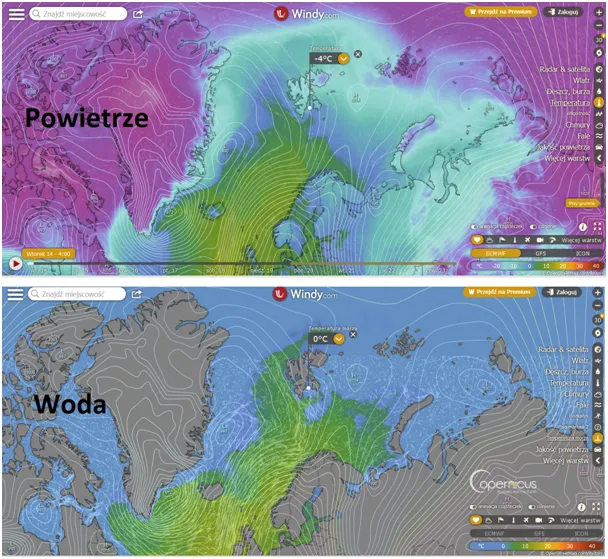
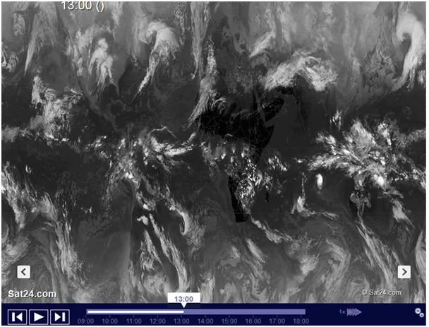

Chmury zimą grzeją, latem chłodzą.
Prąd Zatokowy służy do przenoszenia ciepła z regionów równika na bieguny naszej planety, a tak naprawdę na biegun północny, bo tylko on jest de facto oceanem. Biegun południowy to wielki górzysty kontynent Antarktyda. Pierwsza mapka pokazuje temperatury powietrza u brzegów Spitsbergenu. Kiedyś zimą był cały skuty lodem, teraz nie zamarza. Jak widać ciepły ocean z południa niesie ciepłą wodę. Druga mapka to temperatura wody.

U brzegów Norwegii woda ma jeszcze około 8 stopni, ale u brzegów Spitsbergenu już zero. Słona woda morska zamarza znacznie poniżej zera to i lodu nie ma. Tam trwa ciągle noc polarna, całą dobę ciepło ucieka w Kosmos przez nocne niebo. Woda się wyziębia , a ciepło ucieka w Kosmos tym szybciej, im mniej jest chmur na niebie. Chmury powstają w zależności od jonizacji atmosfery a ta jest pochodna aktywności Słońca. System jest bardzo skomplikowany, bo chmury na biegunie grzeją a te na równiku chłodzą. Paradoksalnie więcej chmur to późna wiosna w Afryce północnej i w Syrii, bo Słonce nie może ogrzać powietrza, a to dopiero nagrzany grunt ogrzewa powietrze.

Ciemna Afryka to Afryka rozgrzana (zdjęcie) w podczerwieni) na Saharze i na Bliskim Wschodzie ciągle zimno i chmury... W Syrii i Turcji niestety też. Pomoc potrzebna !
Jest publikacja na renomowanym magazynie "Nature " o pozytywnym teście tej hipotezy z 2021 roku. Na świecie dyskusja się toczy, tylko nasi politycy o tym nie wiedzą.
Paweł Klimczewski
Dla chętnych tekst artykułu z translatora: https://www-nature-com.translate.goog/articles/s41598-021-99033-1?error=cookies_not_supported&code=b0d46852-2789-41a9-beae-b6ff21ab5cc2&_x_tr_sl=auto&_x_tr_tl=pl&_x_tr_hl=pl&_x_tr_pto=wapp